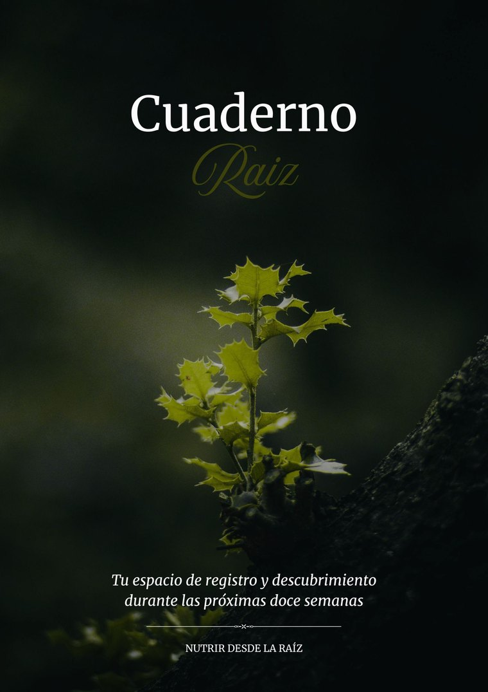
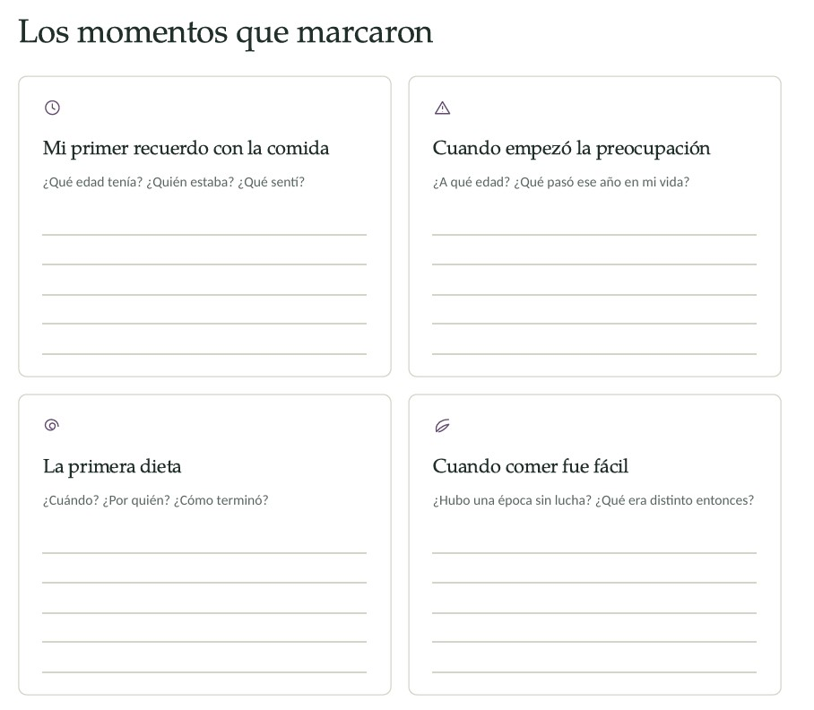
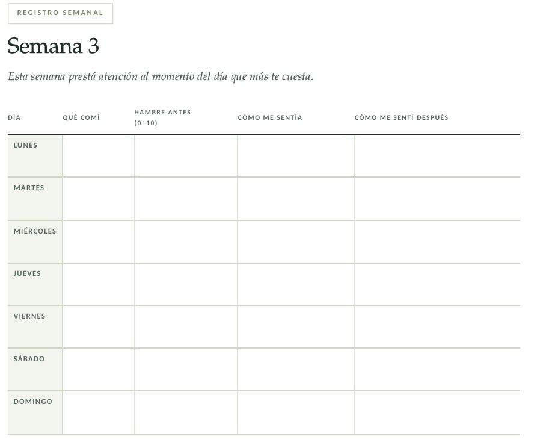
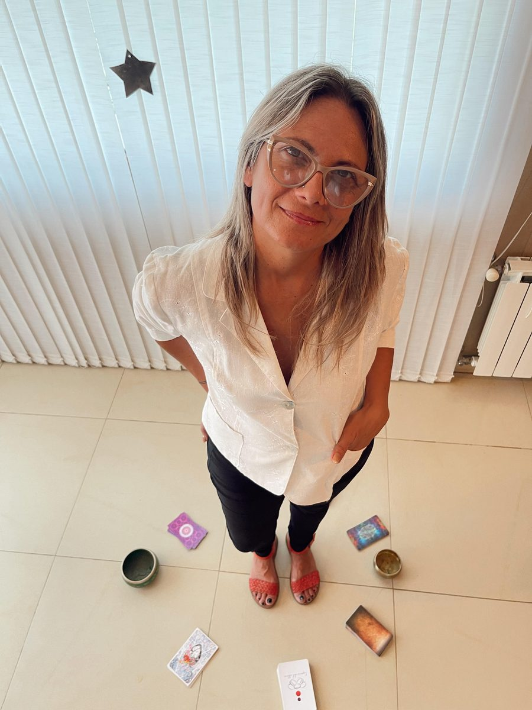

Un acompañamiento de 12 semanas para transformar tu relación con la comida entendiendo de dónde viene. No con otra dieta.
Quiero empezarTe contesto yo, no un bot.
Si te reconocés en tres o más, el problema no es tu voluntad.
Y no es tu próxima dieta.
Una dieta trabaja sobre lo que hacés. Te dice qué poner en el plato, cuánto y a qué hora. Y funciona, mientras te alcanza la fuerza.
Pero lo que hacés con la comida no es la causa. Es el lugar donde aparece otra cosa: lo que sentís, lo que no pudiste decir, lo que venís cargando hace años y a veces ni siquiera empezó con vos.
Por eso podés saber todo y aun así no poder. No es información lo que te falta.
La pregunta no es por qué me pasa lo que me pasa.
Es para qué me pasa lo que me pasa.
No vendo dietas. No vendo planes de alimentación.
Te acompaño a entender el origen.
Hace quince años trabajaba acompañando a personas que necesitaban hacer un tratamiento nutricional antes de acceder a una cirugía bariátrica. Era el requisito para que la obra social autorizara la operación.
Entre tantos pacientes llegó Gonzalo. Justo ese mismo día operaban a su hermana.
Empezamos, pero no por donde se supone que hay que empezar. Me tomé el tiempo de escuchar su historia. Sus miedos. Su infancia. Cómo vivía la obesidad todos los días, sus limitaciones, cómo se miraba. Y en esas charlas empezó a aparecer algo que ningún plan alimentario le había preguntado nunca: cómo se sentía.
Recién en la tercera consulta empezamos a hablar de comida.
Le armé un plan, sí. Pero sin sacarle las cosas que le gustaban: buscamos dónde acomodarlas en su día y en su semana, sin descuidar lo que le hacía bien.
Fueron pasando las consultas y el cambio se empezó a notar. Bajó algunos kilos, pero lo que más lo sorprendía era otra cosa: lo estaba haciendo sin esfuerzo, sin sacrificio. Solo observando cómo se sentía al comer, y pudiendo disfrutar sin presión.
El clic llegó unos meses después. Su hermana había bajado de peso con una cirugía, un posoperatorio duro y mucho sacrificio. Él había bajado casi sin darse cuenta, modificando algunos hábitos y aprendiendo a observarse.
A partir de ahí venía a las consultas con ropa nueva, mostrándome la diferencia con la que usaba antes. Veía su progreso y se sentía pleno, libre, feliz.
Ese día entendí algo que venía viendo desde que empecé la carrera: alimentarse es mucho más que comer bien. Es sentir, comprender y entender, para poder alimentarme y vivir.
Hace quince años que trabajo así. Nutrir desde la Raíz es ese camino, ordenado en doce semanas.
Un programa individual de doce semanas donde trabajamos tu vínculo con la comida desde su origen: lo que sentís, lo que aprendiste y lo que heredaste. Nueve encuentros conmigo, materiales propios y acompañamiento entre sesión y sesión.
Doce semanas de diferencia, línea por línea.
Una aclaración honesta: no te voy a prometer un número en la balanza. Te voy a prometer que vas a entender lo que te pasa. Y desde ahí, las decisiones empiezan a cambiar solas.
Preparamos el terreno. Llegás al primer encuentro sabiendo hacia dónde vamos y por qué.
Dejás de pelear y empezás a observar. Qué comés, cuándo, y sobre todo qué está pasando cuando pasa.
Aparece el origen. Lo emocional, lo aprendido y lo que viene de tu historia familiar.
Lo que entendiste se vuelve forma de vivir, no esfuerzo. Acá se juega que el cambio quede.
Nos volvemos a encontrar para revisar cómo seguiste sola. El programa termina, el acompañamiento no.
Uno a uno conmigo, por videollamada. No es un grupo ni un curso grabado.
59 páginas de material propio: herramientas, bitácoras semanales y prácticas para trabajar entre encuentros.
Grabados con mi voz, para acompañarte en los momentos en que más cuesta.
Todo lo que necesitás para llegar preparada al primer encuentro.
Tu punto de partida por escrito, para volver a mirarlo cuando quieras medir cuánto avanzaste.
No desaparezco entre una sesión y la otra. Cuando aparece lo difícil, aparece justo entre medio.
Lo escribís de tu puño y letra al empezar. Es el ancla a la que volvemos cuando el camino se pone cuesta arriba.
Un encuentro más, tres meses después de terminar, para sostener lo que construimos.
Esto no son nueve sesiones.
Es un método completo.
Escrito por mí, para este programa. No es material descargado de ningún lado.

59 páginas para acompañarte durante las doce semanas.

Las preguntas que nunca te hicieron. Acá empieza todo.

No es un conteo de calorías: es qué comiste, cuánta hambre tenías antes y cómo te sentías antes y después. Ahí aparecen los patrones que nunca habías visto.

Integral quiere decir que no te miro como un cuerpo que come mal. Te miro completa: lo que sentís, lo que pensás, cómo dormís, cómo te hablás.
Sistémica quiere decir que no te miro sola. Te miro dentro de tu historia, porque muchos de tus modos de comer no los elegiste: los aprendiste, y algunos ni siquiera empezaron con vos.
Sobre esa mirada trabajo con cinco herramientas: nutrición consciente, mindfulness, gestión emocional, coaching holístico y trabajo sistémico.
Preguntame lo que necesites saber antes de decidir. Te contesto yo, no un equipo ni un bot. Y no te voy a insistir después.
Escribime aunque todavía no estés segura. Escuchar lo que te pasa también es parte de mi trabajo.
Sacate las dudas conmigoSi llegaste hasta acá, probablemente ya empezaste otras cosas antes. Y las dejaste. Y esa es, en el fondo, la duda más grande que tenés ahora mismo: no cuánto sale, sino si vas a poder sostenerlo.
Diseñé este programa asumiendo que ese momento va a llegar.
Hay una semana, más o menos la quinta, en la que casi todas quieren aflojar. No es casualidad y no es que fallaste: es justo el momento en que aparece de verdad aquello que veníamos buscando. Lo que antes tapabas con comida queda a la vista, y la primera reacción siempre es querer salir corriendo.
Esa semana no es el final del camino. Es el camino.
Por eso está previsto. Sé cuándo llega, sé cómo se ve, y no te dejo sola ahí. No hay nada que puedas hacer o dejar de hacer que me sorprenda: lo vi cientos de veces y sé cómo se atraviesa.
12 semanas · 9 encuentros individuales · material propio · acompañamiento permanente
Los números de esta lista no son el precio. Son lo que costaría cada parte si la compraras por separado.
Pero no pagás eso.
No es para vos si buscás bajar diez kilos en un mes, si querés un plan de comidas y nada más, si no tenés ganas de mirar nada que no sea la comida, o si estás buscando la opción más económica. Prefiero decírtelo ahora y no dentro de tres semanas.
Porque todo lo que probaste trabajaba sobre la conducta y esto trabaja sobre la causa. Las dietas te dicen qué hacer; vos ya sabés qué hacer. Lo que no sabés todavía es por qué, cuando llega el momento, no podés. Ese es exactamente el punto donde empezamos.
Un encuentro conmigo de aproximadamente una hora, y entre quince y veinte minutos por día de trabajo propio con el Cuaderno. No es tiempo que tenés que sumar a tu día: es tiempo que le sacás a la cabeza dando vueltas alrededor de la comida.
Sí, y en muchos casos mejor. Estás en tu casa, en tu lugar, sin viajes ni salas de espera, y eso hace que se abran cosas que en un consultorio cuestan más. Hace años que acompaño procesos así.
No te lo voy a prometer, porque sería deshonesto y porque no es el eje del programa. Lo que sí veo, una y otra vez, es que cuando la relación con la comida cambia, el cuerpo acompaña. Como le pasó a Gonzalo: casi sin darse cuenta.
No. Trabajo justamente al revés: buscamos dónde acomodar lo que te gusta dentro de tu día y tu semana, sin descuidar lo que te hace bien. Todo lo que se prohíbe, vuelve. Siempre.
Es individual, uno a uno. Los nueve encuentros son conmigo y con nadie más.
Nada. No hace falta experiencia previa ni creer en nada en particular. Vamos de a poco y solo por donde vos estés dispuesta a ir. Si querés ver cómo trabajo con cada herramienta, está explicado acá.
Que es exactamente lo que esperamos, y está previsto. Hay un momento del proceso donde eso aparece en casi todas. No es señal de que fallaste: es señal de que llegamos a donde teníamos que llegar. Y ahí no estás sola.
Sí, y me parece muy bien que me lo cuentes al empezar para integrarlo. Este acompañamiento no reemplaza tratamiento médico ni psicológico: trabaja al lado.
En tres cuotas mensuales de $120.000, o en un solo pago de $330.000. Los detalles los coordinamos por WhatsApp cuando me escribas.
Es entre otro año igual y este.
Otro año de empezar los lunes. Otra primavera con la misma bronca frente al espejo. Otros doce meses de la misma conversación con la comida, en la cabeza, todo el día.
O doce semanas para entender de dónde viene y no tener que volver a empezar nunca más desde cero.
Quiero empezarTe contesto yo. Y si todavía tenés dudas, también.